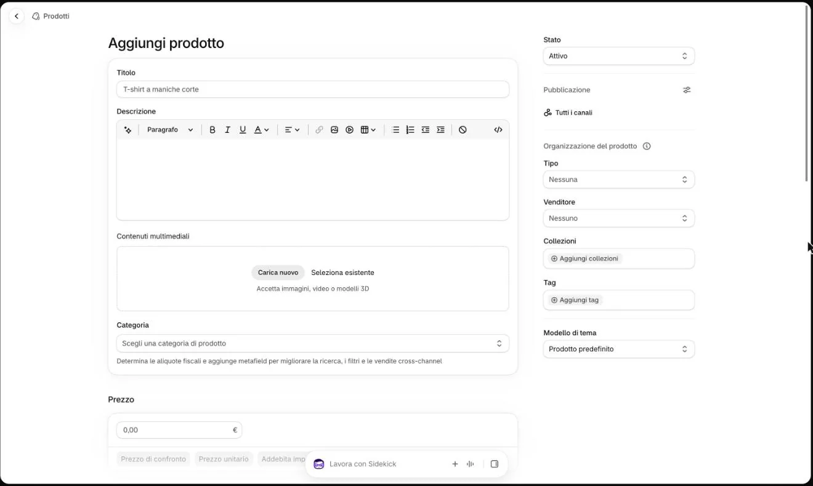
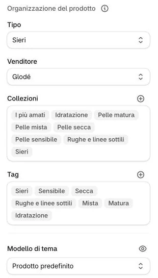
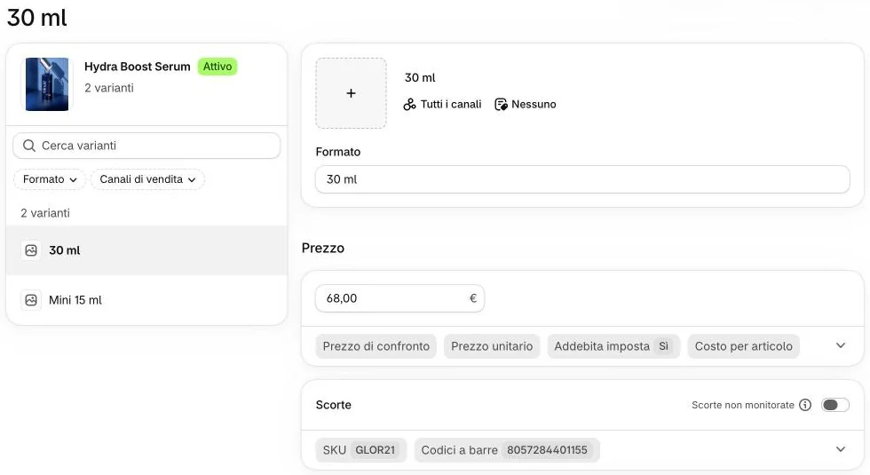
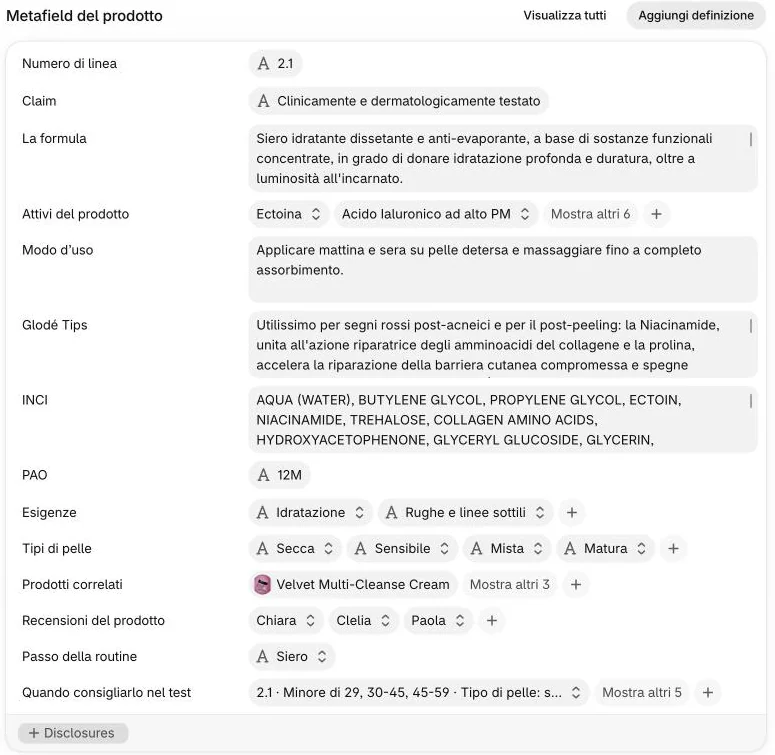
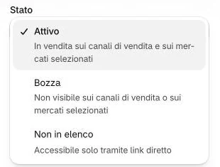
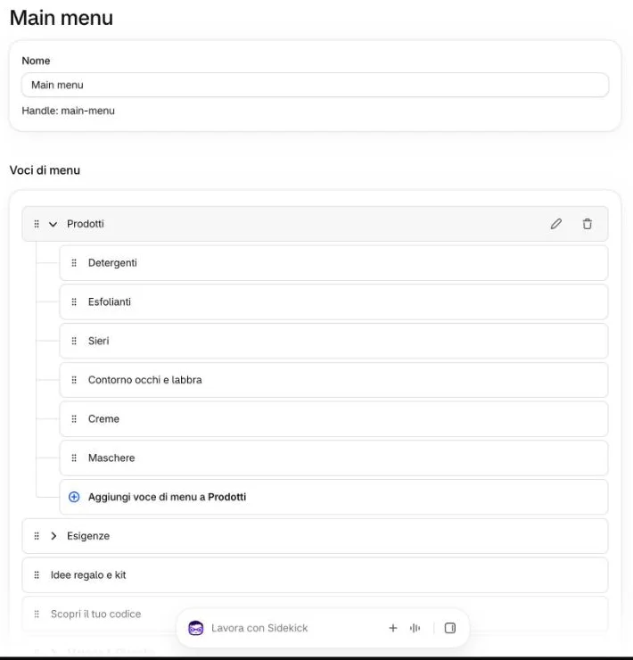

Un accessorio si crea come un prodotto della linea, con due differenze: il «Tipo» è «Accessori» e i campi da cosmetico restano vuoti. Sul sito la sua pagina non mostra attivi, INCI, formula né rituale. Tenete pronti: le foto, il prezzo e il codice articolo (SKU).
Cliccate «Prodotti», poi «Aggiungi prodotto», e mettete subito lo «Stato» su «Bozza».

1E le bozze che ho già fatto?
Vanno bene: apritele da «Prodotti» e continuate dal passo 2. Controllate solo che lo «Stato» sia «Bozza».
Scrivete il «Titolo» e la «Descrizione», e caricate le foto in «Contenuti multimediali».
2Quante foto?
Almeno una: un prodotto senza foto resta fuori da menu e home. La prima foto è quella che si vede aprendo la pagina. Per il testo alternativo vale lo stesso passo di Creare un prodotto nuovo.
Cosa metto nella descrizione?
Tutto quello che serve sapere: materiale, misure, come si usa. Sulla pagina di un accessorio è il testo principale, con «Leggi tutto» se è lungo.
Scrivete il «Prezzo». Se l’accessorio ha un modello solo, non aggiungete nessuna opzione in «Varianti».
E se ci sono più colori o misure?
Allora sì: in «Varianti» aggiungete l’opzione (per esempio «Colore») con i suoi valori, e un prezzo per ognuno, come in Creare un prodotto nuovo. Sul sito si sceglie con i bottoni, come i formati.
In «Organizzazione del prodotto», nel «Tipo» scrivete «Accessori», in «Venditore» «Glodé», nei «Tag» «Accessori».

4Perché proprio «Accessori»?
È il «Tipo» che dice al sito che si tratta di un accessorio: la pagina toglie attivi, INCI, formula e rituale, e il prodotto entra da solo nella collezione «Accessori» e nella sua scheda del menu.
Scrivetelo esattamente così, con la A maiuscola e senza spazi: «Accessorio» o «accessori » non entrano nella scheda del menu, senza nessun messaggio d’errore. Nella foto c’è «Sieri» perché è un siero.
Cliccate «Salva», poi la variante nella tabella: scrivete lo «SKU» e cliccate «Salva».

5Lo SKU è obbligatorio?
Per il menu e la home sì: senza SKU l’accessorio non compare lì (nel catalogo e nella ricerca sì). Usate un codice diverso da tutti gli altri. Il codice a barre, se c’è, va scritto come per gli altri prodotti.
In «Metafield del prodotto» lasciate vuoti «Attivi del prodotto», «INCI», «Esigenze», «Tipi di pelle», «Passo della routine» e «Quando consigliarlo nel test».

6E «Modo d’uso»?
Facoltativo: scrivetelo solo se c’è qualcosa da dire (per esempio come si lava la manopola). Se è vuoto, sulla pagina non compare niente. Lo stesso per «Glodé Tips».
E se compilo un campo per sbaglio?
Attivi, INCI e formula sulla pagina di un accessorio non compaiono comunque. Le esigenze e i tipi di pelle invece lo fanno entrare nelle collezioni delle esigenze: lasciateli vuoti.
Mettete lo «Stato» su «Attivo», poi cliccate «Salva».

7
Solo la prima volta: «Contenuto» → «Menu» → «Main menu», aprite «Prodotti» con la freccia ⌄ e cliccate «Aggiungi voce di menu a Prodotti».

8Cosa scrivo?
«Etichetta»: Accessori. «Link»: la collezione «Accessori». Poi trascinate la voce in fondo, dopo «Maschere», tenendo la maniglia ⠿. Il menu va online subito: aggiungete la voce solo quando almeno un accessorio è attivo, se no la scheda resta vuota.
L’immagine a sinistra della scheda è la copertina della collezione «Accessori»: si carica come spiegato in Collezioni automatiche e manuali.
Sul sito
La pagina di un accessorio ha foto, nome, prezzo, descrizione e il bottone per il carrello. Non ha attivi, INCI, formula, rituale in tre gesti né «Made in Italy»; «Modo d’uso» solo se l’avete scritto.
Il test della pelle non consiglia mai un accessorio. Lo trovate nella scheda «Accessori» del menu, in «Tutta la linea» e nella ricerca.